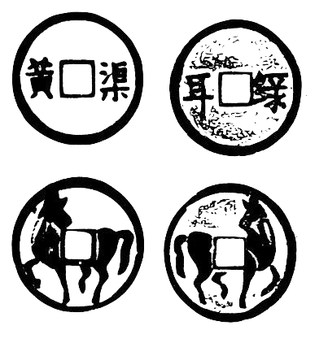

Setting
打马棋子 [Qizi] Chess Piece
棋盘节点 [Jiedian] Checkpoints
The starting and ending squares are labeled 赤岸驿 [Chi'an Yi] and 尚乘局[Shangcheng Ju] respectively. Along the route, at every eighth square, the spaces are labeled 陇西监 [Longxi Jian], 玉门关 [Yu Men Guan], 汧阳监 [Qian Yang Jian], 沙苑监 [Sha Yuan Jian], 函谷关 [Han Gu Guan], 太仆寺 [Tai Pu Si], 天驷监 [Tian Si Jian], 骐驿院 [Qi Yi Yuan], and 飞龙院 [Fei Long Yuan]. These eleven special squares are collectively called 窝[Wo].